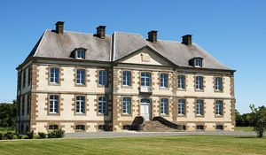
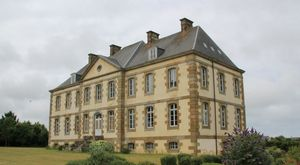

Recensement Jean-Claude Truffet
| Département | 50 — Manche |
| Canton | Quettreville-sur-Sienne |
| Commune | Annoville |
| Type d'édifice | Château |
| Période d'origine | XVII |


ANNOVILLE, situé à une centaine de mètres de la route reliant Montmartin-sur-Mer et Granville, le château d'Annoville domine les plages d'Annoville et de Hauteville-sur-Mer sur la Côte des Havres. La famille Michel d'Annoville-Tourneville le fait édifier au XVIIe siècle, avec notamment du granite de Chausey acheminé depuis le Havre de Regnéville-sur-Mer. Le château voit s'y rencontrer une partie de la noblesse bas-normande : alliés aux grandes familles du temps, notamment à celle de Tourville, les Michel d'Annoville-Tourneville y donnent des fêtes particulièrement brillantes. Jusqu'à 1935, les boiseries de son vestibule ainsi que le lustre en fer forgé pesant environ une tonne et les grandes tapisseries de sa salle des fêtes témoignent encore de ces splendeurs passées À la mort de Pierre Charles Léonor Michel, premier maire dAnnoville en 1789, le château est transmis à son fils aîné : Florent Michel d'Annoville, maire de Muneville-sur-Mer. Le fils-cadet de celui-ci, Nicolas Louis Michel, en hérite (son frère aîné, Léonor Henri, étant mort avant son père), lequel retransmet le château à son unique fils : Charles Marie. À la suite de la disparition en mer de ce dernier en 1879 comme lieutenant de vaisseau (dans le naufrage de la batterie flottante l'Arrogante près de Hyères), le château passe à son fils unique, Marie Charles Louis Raoul, qui ny réside pas.
ANNOVILLE, après avoir été déserté durant une trentaine dannées à partir de la guerre franco-allemande de 1870, le château est habité par Georges Michel d'Annoville, un des fils de Pierre Charles Ferdinand Michel d'Annoville (celui-ci étant cousin-germain de Nicolas Louis Michel Michel d'Annoville). Après la mort en 1910 de lépouse de Georges Michel d'Annoville, Lokoma Amelot de chaillou (indienne tehuelche de Patagonie adoptée par la famille Amelot de Chaillou), le château est habité par Paul Dutasta (chef de cabinet du ministre des Affaires étrangères Stephen Pichon), qui y reçoit à plusieurs reprises Georges Clemenceau.
Marie Charles Louis Raoul Michel d'Annoville (fils unique de Charles Marie Michel d'Annoville ci-avant), consul de France au Luxembourg en 1907, meurt sans héritier en 1916 dans les combats de louvrage de Thiaumont lors de la bataille de Verdun (comme sous-lieutenant au 294e régiment d'infanterie). Le château revient alors à sa mère : Marie Charlotte Léonie Le Pelletier d'Angoville (veuve de Charles Marie Michel d'Annoville ci-avant). À la mort de cette dernière en 1930, le château est vendu par la famille Le Pelletier d'Angoville. À partir de 1935, la majeure partie de son contenu est dispersée, notamment un tableau représentant le maréchal de France Anne Hilarion de Costentin de Tourville qui est transmis à la famille Desgrées du Loû à Nantes.En 2003, le château est racheté par Pierre de Castellane (1960-2018) qui le restaure, redessine et replante le jardin. Il en fait un lieu culturel en ouvrant la propriété pour des expositions, des spectacles et des conférences.
famille Michel d'Annoville-Tourneville
"
Château d'Annoville 48° 58' 02" nord, 1° 32' 12" ouest